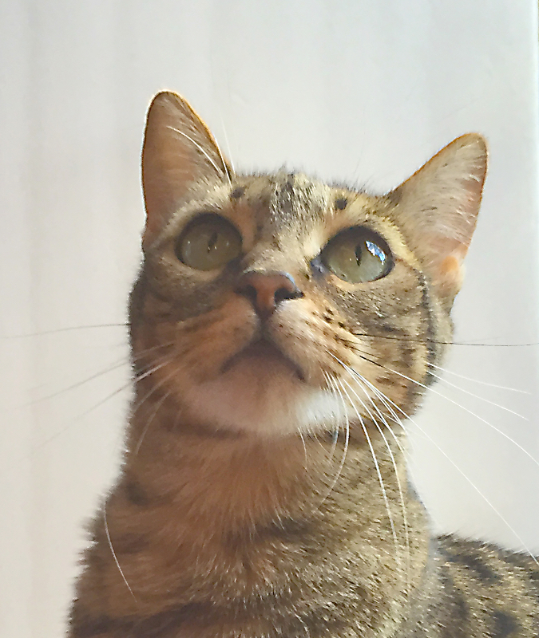

A Savannah cat is a cross between a domestic cat and the serval, a medium-sized, large-eared wild African cat. The unusual cross became popular among breeders at the end of the 1990s, and in 2001 the International Cat Association accepted it as a new registered breed. In May 2012, TICA accepted it as a championship breed.
A Bengal breeder, Judee Frank, crossbred a male serval, belonging to Suzi Woods, with a Siamese (domestic cat) to produce the first Savannah cat (named Savannah) on April 7, 1986.[1] In 1996, Patrick Kelley and Joyce Sroufe wrote the original version of the Savannah breed standard and presented it to the board of The International Cat Association. In 2001, the board accepted the breed for registration.
This article uses material from the Wikipedia article "Savannah cat", which is released under the Creative Commons Attribution-Share-Alike License 3.0.
"Blast from the Past. . . . The Very First F1 Savannah" (PDF). Feline Conservation Federation 51 (4): 32. 2007. (Original essay: Wood, Suzi (November 1986). LIOC-ESCF 30 (6): 15.)
Picture By: Edward Williams